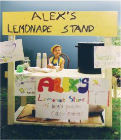
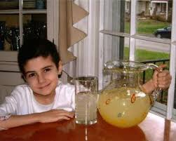
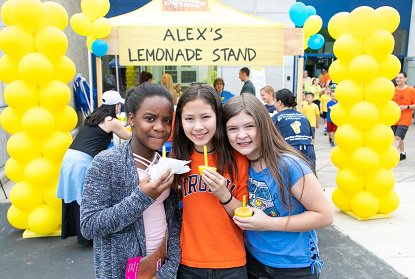
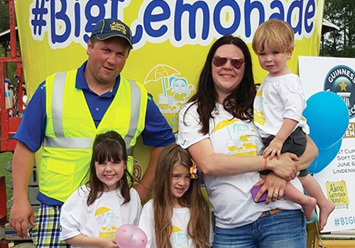
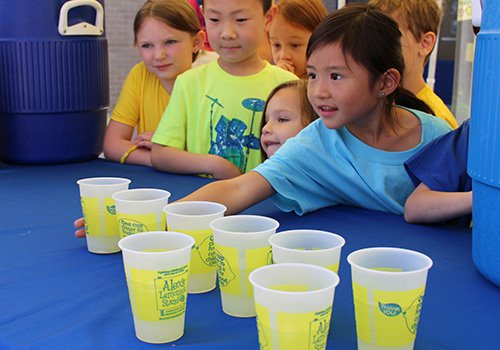
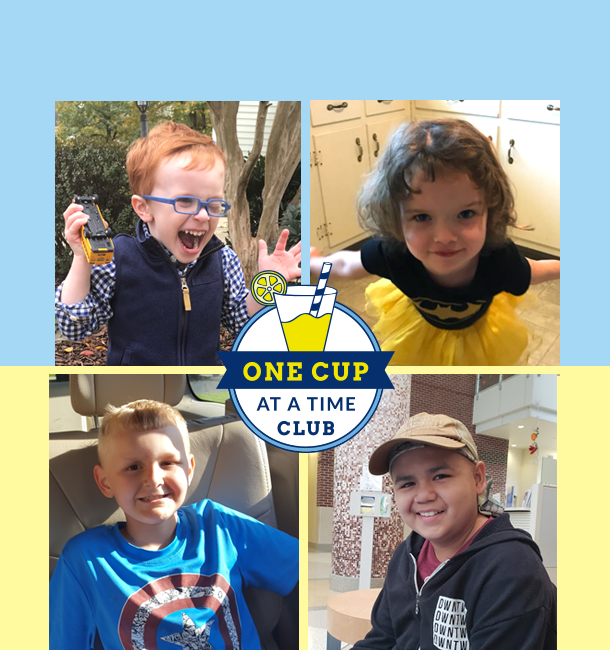

About ALSF and Alex
Alex’s Lemonade Stand Foundation (ALSF) is changing the lives of children with cancer by funding impactful research, raising awareness, supporting families and empowering everyone to help cure childhood cancer. Alex was just 4 years old and battling neuroblastoma when she asked to give the money so doctors can find cures for all children battling cancer.Alex and her family continued to hold yearly lemonade stands in their front yard to benefit childhood cancer research. News spread of the remarkable sick child dedicated to helping other sick children. People from all over the world, moved by her story, held their own lemonade stands and donated the proceeds to Alex and her cause.
Our Heroes
Ryan Eng, a 5 year old from Denver that is facing many struggles after being diagnosed with acute Lymphoblastic Lukemia says each daay, “Dear Jesus, thank you for this wonderful day.” Even in the scariest moments of Ryan’s fight–anxiously awaiting blood tests or taking steroids that alter his bubbly personality–the family remainss empowered by Ryan’s empathy.Eden, a 10 year old girl was diagnosed with a rare tumor, that doctors have never seen before. She is currently enrolled in an ALSF-funded clinical trial for children with relapsed solid tumors. Eden is just the 10th patient nationally to receive this treatment, but so far, the results have been positive.
    How can we help?

Your donations fund research that brings better treatments and cures to children with cancer. ALSF also provides emotional, financial and logistical support to childhood cancer families that makes their challenges more manageable. Programs like SuperSibs and Travel For Care have an immediate impact on families dealing with a childhood cancer diagnosis. With your support, we have been able to fund outstanding research, leading toward cures and improved quality of life for children with cancer. There are nearly 1,000 funded projects.
We carefully select our projects, vetting applications to make sure that our funding supports the most substantive and critical contributions to the field of childhood cancer research. Proposals are evaluated and rated by our scientific review board or nursing review board and approved by our board of directors. We look for projects that are likely to play a part in bringing the latest and most promising lifesaving treatments to seriously ill children. Specific guidelines are provided for each type of grant. You can donate here: Donate